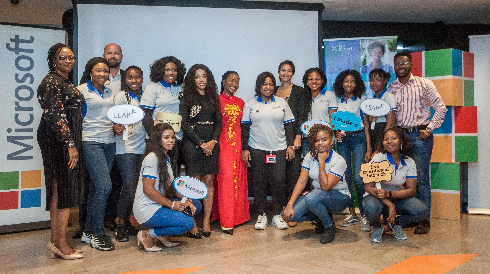

Back
Back
Advisory Board Member Spotlight: Olatomiwa Williams
| June 24, 2020


We had a brief chat with Mrs Olatomiwa Williams, one of our advisory board members for the concluded Nigerian Women Techsters initiative. Through her immense support and guidance, we were able to complete the program. Here are her thoughts on gender diversity in the tech industry, projects she’s been involved in and her thoughts on the injustice against women ravaging the country right now.
What’s your current role at Microsoft and a summary of what that entails?
I am the Partner Technology Lead for the Middle East and Africa Multi-Cluster Countries and I’m responsible for leading a team of specialists to accelerate channel growth and building partner capacity across sixty-seven countries in Africa and part of the Middle East.
What are your thoughts on the importance of female inclusion in technology and bridging the digital divide?
Being deliberate in driving gender diversity agenda will help accelerate the positive impact of technology on us all.
Can you share any project you are working on presently?
My passion for diversity in the technology industry drives my involvement in different initiatives focused on encouraging and developing diverse talents within the Information Technology Industry. Part of the Gender Initiative I have been involved in recently is supporting the Microsoft LEAP program in Nigeria. LEAP is a 16-week diversity initiative of Microsoft focused on inspiring and developing new talent. Through this program, we have been able to bring in several diverse talents into our partner ecosystem. I am happy that some of the cohorts from the Nigerian Women Techsters program have been part of the program and are gainfully employed with top technology organizations in Nigeria. I encourage organizations to sponsor female talents to be part of these initiatives because we have heard great testimonials about the program from Leapers and their employers.
How have you been staying safe and active professionally in light of the COVID 19 pandemic?
I have been lucky to work with an organization that uses tools and technology that make employees productive while working remotely. I use Microsoft Teams to continue to connect with my team members, partners and customers. With Microsoft 365 solution, I have been able to work from home effectively and securely too.
What are your thoughts on the injustice against women ravaging the country right now (especially rape and police brutality) and the recent outrage against them?
Anyone harming a woman is doing injustice to the human race. The impact of rape, police brutality or any form of violence against women have a long-lasting impact on the victim and could last generations. No one should sit on the fence regarding these issues we all must do our bit within our span of influence to put a stop to this. It starts from as little as to how we educate our girls to speak up and stand up for themselves and how we educate our boys to cherish and protect women. Everyone can do something about it and we all must!